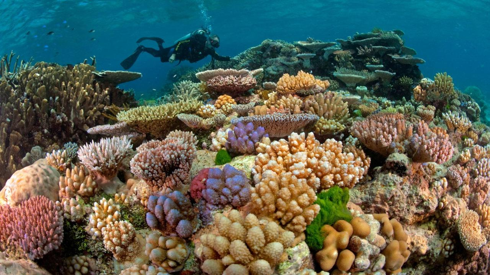

Area Konservasi Laut: Studi Kasus Siswa
Siswa membuat poster atau media lain yang berfungsi sebagai studi kasus untuk Kawasan Konservasi Laut tertentu. Mereka secara singkat mempresentasikan MPA mereka, menjawab pertanyaan, dan pekerjaan teman-teman sekelas dan presentasi.
1. Tetapkan siswa memasangkan Area Konservasi Laut untuk dipelajari.
Tinjau secara singkat apa itu Kawasan Konservasi Laut dan studi kasus dan mengapa mereka penting. Jelaskan bahwa mereka digunakan untuk membangun dan mengelola wilayah laut yang mengandung sumber daya alam dan budaya yang penting. Bagilah siswa menjadi pasangan. Dengan menggunakan lembar kerja Daftar Terpilih Kawasan Konservasi Laut, tetapkan setiap pasangan satu MPA untuk diteliti dan disajikan.
2. Mintalah siswa memasangkan penelitian dan membuat studi kasus untuk Area Perlindungan Laut yang ditugaskan kepada mereka.
Bagikan salinan Studi Kasus MPA: lembar kerja Catatan Penelitian. Baca dengan lantang arahan. Jelaskan kepada siswa bahwa tugas mereka adalah membuat dan menyajikan studi kasus MPA yang mencakup yang berikut:
Deskripsi MPA, termasuk ukuran dan lokasi
tujuan, atau misi, dari KKL
inventarisasi spesies
penjelasan tentang bagaimana MPA berkontribusi pada sumber daya alam, ekonomi, atau budaya
informasi tentang siapa yang mengelola daerah dan apa yang sedang dikelola
evaluasi apakah KKL berhasil atau tidak dalam sasaran manajemennya
daftar pemangku kepentingan; misalnya, organisasi lingkungan atau non-pemerintah, lembaga pemerintah daerah, kelompok kepentingan publik, warga negara, ilmuwan, dan nelayan
contoh dari tantangan yang dihadapi selama proses penunjukan KKL
contoh keberhasilan yang ditemui selama proses penunjukan KKL
Pastikan siswa memahami semua hal yang diharapkan akan mereka teliti untuk KKL mereka. Mintalah siswa memulai penelitian mereka dengan situs web Protect Planet Ocean: Marine Reserves Studied Around the World. Beri siswa waktu untuk melakukan penelitian dan mencatat MPA yang ditugaskan menggunakan sumber online dan perpustakaan tambahan.
3. Mintalah siswa membuat poster atau media lain untuk mempresentasikan studi kasus mereka.
Minta setiap pasangan untuk membuat poster atau media lain yang menyediakan informasi tentang studi kasus Kawasan Konservasi Laut mereka dengan cara yang cepat dan menarik secara visual. Gunakan format presentasi kelas standar atau mintalah siswa membuat poster interaktif menggunakan alat presentasi online. Imbaulah siswa untuk meningkatkan teks mereka dengan gambar dari majalah atau sumber daring. Tekankan kepada siswa bahwa mereka tidak boleh mencoba untuk memasukkan semua penelitian studi kasus mereka pada poster. Alih-alih, mereka harus memberikan gambaran informasi yang menarik secara visual. Berikan masing-masing pasangan siswa salinan Formulir Penilaian Teman: lembar kerja Galeri Siswa. Jelaskan bahwa rubrik menguraikan kriteria yang akan dievaluasi: desain, konten, organisasi, dan kreativitas. Bahas secara singkat kriteria dengan siswa dan gunakan untuk memfokuskan penciptaan presentasi studi kasus mereka.
4. Mintalah siswa melakukan jalan-jalan galeri untuk mengevaluasi pekerjaan rekan-rekan mereka.
Tetapkan setiap siswa memasangkan lokasi untuk menampilkan studi kasus MPA-nya. Beri nomor lokasi 1-16, sesuai dengan daftar KKL di Langkah 1. Baca dengan lantang arahan untuk Formulir Penilaian Sebaya: lembar kerja Galeri Siswa Berjalan. Jelaskan bahwa setiap pasangan siswa akan memiliki 20 menit untuk menyelesaikan jalan galeri mereka. Selama waktu itu, mereka akan mengevaluasi satu studi kasus MPA yang ditugaskan sebelumnya menggunakan bagian penilaian sejawat dari lembar kerja. Misalnya, mintalah pasangan siswa yang meneliti MPA # 1, Lundy, Inggris, rekan sejawat menilai MPA # 9, Taman Laut Great Barrier Reef, Australia. Kemudian memiliki MPA # 2, Mediterania Barat, peer menilai MPA # 10, California. Mintalah siswa meninjau sebanyak mungkin studi kasus lainnya sesuai waktu. Untuk setiap ulasan studi kasus, minta mereka untuk menulis dua kalimat tentang apa yang mereka pelajari dan satu pertanyaan yang mereka miliki tentang MPA.
5. Diskusikan penilaian sejawat dan ulasan studi kasus.
Pimpin diskusi tentang bagaimana studi kasus digunakan untuk mewakili karakteristik kunci dari Kawasan Konservasi Laut. Mintalah siswa untuk membagikan apa yang mereka pelajari tentang KKL yang disajikan dalam galeri walk. Diskusikan pertanyaan yang dicatat oleh siswa dalam ulasan studi kasus mereka. Mintalah siswa untuk mengidentifikasi tantangan yang mereka hadapi saat melakukan penelitian mereka dan mempresentasikan studi kasus mereka. Tanyakan: Karakteristik apa yang membuat beberapa studi kasus lebih efektif dan informatif daripada yang lain? Bagaimana para pemangku kepentingan yang berbeda menginterpretasikan informasi yang disajikan dalam studi kasus? Bila waktu memungkinkan, pilih satu atau dua contoh studi kasus MPA dan diskusikan bagaimana pemangku kepentingan yang berbeda dapat menginterpretasikan informasi yang disajikan dalam setiap studi kasus secara berbeda. Tanyakan: Apakah semua KKL berhasil? Mengapa atau mengapa tidak? Gunakan contoh untuk menjelaskan.
